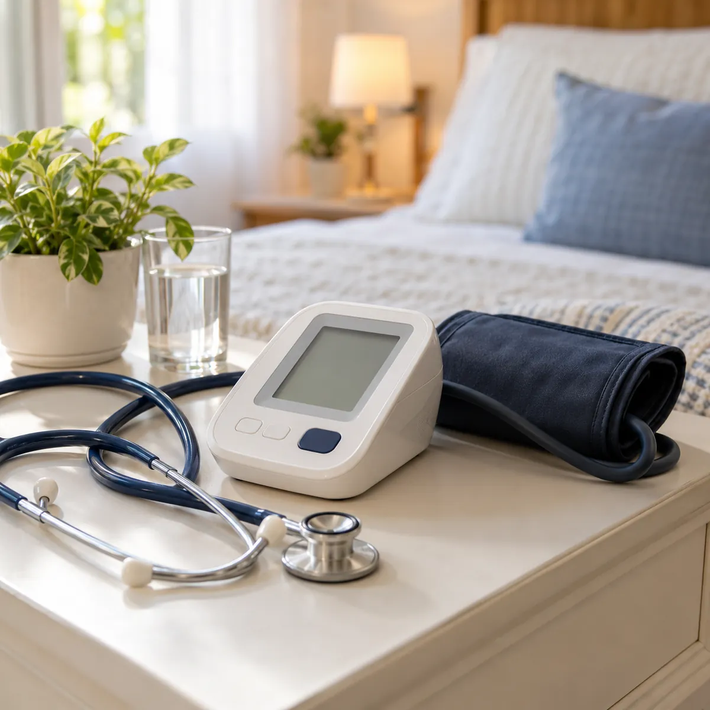

01
Enfermería e internación domiciliaria
Atención de enfermería en tu casa e internación domiciliaria integral, para que el paciente se recupere en su ambiente y con su familia cerca.
Consultar por enfermería